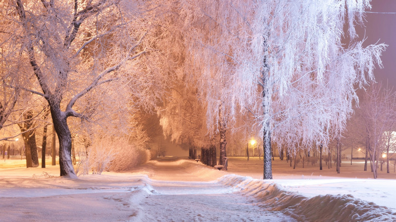
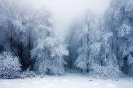
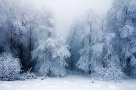

Qish
Rasmlar
.jpg)
.jpg)
.jpg) 

Qiziqarli faktlar
Kimdir uchun qish eng yoqimli palla bo'lsa, boshqalar uchun bu yilning eng “yoqimsiz” davri. Hammasi unga qanday qarashingizga bog'liq - ba'zi odamlar ayoz, momiq qor va qor bilan qoplangan landshaftni yoqtirishadi, kimdir qishda faqat loy hamda sovuqni ko'radi. Qizig'i shundaki, dunyo aholisining qariyb yarmi umrida hech qachon haqiqiy qorni ko'rmagan. Qish - bizning mamlakatimizda bu dekabr, yanvar va fevral oylari mehmon bo’lsa, janubiy yarimsharda - iyun, iyul va avgust oylarida mehmon bo’ladi. Astronomik qish 21dekabrdan 21 martgacha davom etadi. Iqlimli qish kunlik o'rtacha harorat nol darajadan pastga tushganda keladi. Ba'zan qish hukmdorlardan birining buyrug'i bilan kelishi mumkin. Qanday qilib deysizmi? Bir paytlar Fransiya qiroli Lyudovik XIV yozda chanaga minishni xohladi. Hechqanday muammosiz Versal atrofida darhol tuz va shakardan tayyorlangan qor yo'lagi qurildi.Moskvada eng katta qor parchalari qishda emas, balki bahorda yoqqan. Bu 1944 yil 30 aprelda, poytaxtga to'satdan kuchli qor yog'ishi bilan sodir bo'lgan. Qor parchalari tuyaqush patlariga o‘xshab, insonlarning kaftiday katta edi.Yevropalik sotsiologlar aholi o'rtasida o'tkazilgan so'rovnomalar davomida qiziq xulosalarga kelishdi - qishda tug'ilganlarda o'zlarining 100 yoshlariga qadar yashash imkoniyatlarini boshqalarnikiga qaraganda 16% ko'proq bo’larkan. Bundan tashqari, bunday insonlar bardoshliroq va ko'pincha sportda yuqori natijalarga erishadilar.
Mevalar
.jpg)
09:24 06.01.2025